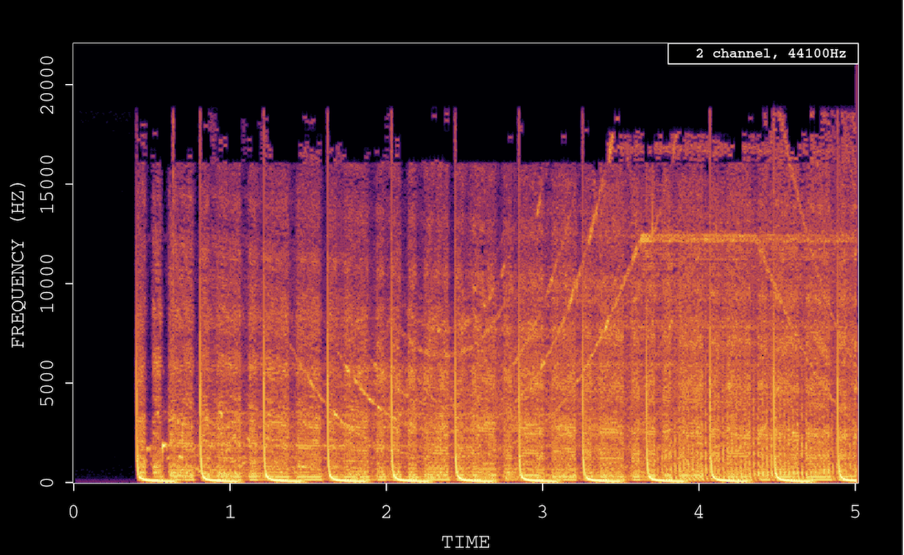

Feb 3, 2020
Software 📦
CRAN:  GitHub:
GitHub: 
New Packages
- The first version (
v0.1.0) ofcreventsis on CRAN - client for the Crossref Events API. Checkout the docs to get started.

- The first version (
v2.1.1) ofbabetteis on CRAN - control BEAST2 from R. Checkout the docs to get started. This package recently went through rOpenSci software review.
New Versions
- A new version (
v7.10.0) ofdrakeis on CRAN - a pipeline toolkit for reproducible computation at scale. See the release notes for changes. Checkout the docs to get started.
many new features and enhancements
- A new version (
v2.1) ofskimris on CRAN - compact and flexible summaries of data. See the release notes for changes. Checkout the vignettes to get started.
to_long()is now generic; works w/ new tibble version; fix toskimr::summarize() - A new version (
v1.3) ofcld3is on CRAN - Bindings to Google’s Compact Language Detector 3. See the release notes for changes. Checkout the docs to get started.
cran fix: do not use CXXCPP
- A new version (
v2.0.0) ofrgbifis on CRAN - interface to the Global Biodiversity Information Facility API. See the release notes for changes. Checkout the occurrence manual to get started.
breaking changes:
occ_downloadinterface has changed; new fxnocc_download_wait() - A new version (
v0.9.7) ofrzmqis on CRAN - R Bindings for ZeroMQ, a lightweight messaging kernel. See the release notes for changes. Checkout the README to get started.
cran fix: do not use CXXCPP
- A new version (
v0.2.5) ofwdmanis on CRAN - Webdriver/Selenium binary manager. See the release notes for changes. Checkout the vignette to get started.
replaced
subprocess(archived in CRAN) withprocessx - Two new versions (
v0.4.0andv0.5.0) ofavhave hit CRAN since the last newsletter - working with audio and video. See the release notes for changes. Checkout the docs to get started, and the recent blog post by Jeroen.
windows/mac binaries now ship w/ ffmpeg 4.2.2; new functions
- A new version (
v0.9.0) ofrbhlis on CRAN - interface to the Biodiversity Heritage Library. See the release notes for changes. Checkout the docs to get started.
package re-worked for new BHL API version; some functions defunct, some new functions
- A new version (
v2.4.2) ofRNeXMLis on CRAN - Semantically Rich I/O for the NeXML Format. See the release notes for changes. Checkout the vignettes to get started.
minor bug fix
- A new version (
v0.8.0) ofrvertnetis on CRAN - Search Vertnet, a database of vertebrate specimen records. See the release notes for changes. Checkout the docs to get started.
searchbyterm()&bigsearch()reworked: no more fuzzy arg matching - A new version (
v0.6.0) ofrorcidis on CRAN - Interface to the Orcid.org API. See the release notes for changes. Checkout the vignette to get started.
orcid_citations()parses bibtex better;orcid_search()gains new parameters & bug fixes - A new version (
v0.6.0) ofrredlistis on CRAN - IUCN Red List client. See the release notes for changes. Checkout the README to get started.
note in docs wrt different result in website vs. package; fail with useful message when NA’s passed to functions
- A new version (
v1.0) oflightris on CRAN - read spectrometric data and metadata. See the release notes for changes. Checkout the docs to get started.
parallel processing now relies on the future package;
lr_parse_generic()now works with non-UTF8 files;lr_get_spec()w/ newinterpolateparam - A new version (
v0.5.0) ofmicrodemicis on CRAN - Microsoft Academic API client. See the release notes for changes. Checkout the README to get started.
new author Christopher Baker; fix error messages
- A new version (
v0.5.0) ofstplanris on CRAN - sustainable transport planning. See the release notes for changes. Checkout the docs to get started.
some package dependencies removed;
route_graphhopper()now works w/ a local graphhopper instance; bug fixes - A new version (
v0.4.0) ofcharlatanis on CRAN - a comprehensive approach to making fake data, supporting many languages. See the release notes for changes. Checkout the docs to get started.
new vignette “contributing to charlatan”; some new locales
- A new version (
v2.0.1) ofGSODRis on CRAN - Global Surface Summary of the Day (GSOD) Weather Data from R. See the release notes for changes. Checkout the docs to get started.
requires R>3.5; tidy documentation; bug fixes
- A new version (
v2.3) ofmagickis on CRAN - Advanced graphics and Image-Processing in R. See the release notes for changes. Checkout the vignette to get started.
fix crash with openmp on OSX;
image_shadowfix;image_animate()andimage_read()improvements - A new version (
v1.0) ofNLMRis on CRAN - Simulating neutral landscape models. See the release notes for changes. Checkout the docs to get started. - A new version (
v1.0.0) ofpangaearis on CRAN - Client for the Pangaea database. See the release notes for changes. Checkout the docs to get started.
pg_search()fix for searching with a bounding box that crosses 180/-180 longitude - A new version (
v0.7.0) ofbomrangis on CRAN - Australian government Bureau of Meteorology (BOM) data. See the release notes for changes. Checkout the docs to get started.
requires R>3.5; 3 new fxns to parse local XML files; bug fixes
- A new version (
v1.0.2) ofcyphris on CRAN - high level encryption wrappers. See the release notes for changes. Checkout the docs to get started. - A new version (
v1.4) ofunrtfis on CRAN - Extract text from Rich Text Format (RTF) documents. See the release notes for changes. Checkout the README to get started.
fix compiler warning on Windows GCC 8
- A new version (
v1.2.0) ofc14bazAARis on CRAN - download and prepare C14 dates from different source databases. See the release notes for changes. Checkout the docs to get started.
unified database names throughout pkg; new fxns
- A new version (
v1.1.0) ofelasticis on CRAN - general purpose interface to Elasticsearch. See the release notes for changes. Checkout the docs to get started.
make
typeoptional in all functions; new methodindex_shrink(); fix to makedocs_bulk()with pipeline attachments work - A new version (
v0.9.2) ofbiomartris on CRAN - Genomic Data Retrieval. See the release notes for changes. Checkout the vignettes to get started.
fix for examples run on CRAN
- A new version (
v0.2.3) ofrdflibis on CRAN - high level wrapper around the redland rdf package. See the release notes for changes. Checkout the docs to get started.
drop import of deprecated redland method
getNextResult - A new version (
v0.6.0) ofwellknownis on CRAN - Convert between WKT and GeoJSON. See the release notes for changes. Checkout the vignette to get started.
fix to
wkt_wkb()method - support new version of V8 that converts JS buffers to raw vectors - A new version (
v0.5.0) ofgistris on CRAN - work with GitHub Gists. See the release notes for changes. Checkout the docs to get started.
vignette gains example of round-tripping a data.frame to a gist & back (@jsta); udpate docs regarding GitHub PAT;
gist_create()bug fix - A new version (
v0.7.3) ofDataSpaceRis on CRAN - interface to the CAVD DataSpace. See the release notes for changes. Checkout the docs to get started. - A new version (
v0.0.5) ofplotdapis on CRAN - easily visualize data from ERDDAP servers via the rerddap package. See the release notes for changes. Checkout the vignette to get started. - A new version (
v0.5.0) ofrdataciteis on CRAN - client for DataCite. See the release notes for changes. Checkout the README to get started.
Major refactor to work with the new DataCite API: all functions from the previous version are defunct
- A new version (
v0.7.0) ofrtweetis on CRAN - client for accessing Twitter’s REST and stream APIs. See the release notes for changes. Checkout the docs to get started.
fixed numerous typos and grammatical mistakes; various bug fixes and stability improvements for data parsing
- A new version (
v1.0.0) offingertipsRis on CRAN - Fingertips data for public health http://fingertips.phe.org.uk/. See the release notes for changes. Checkout the vignettes to get started.
Software Review ✔
We accept community contributed packages via our software review system - an open software review system, sorta like scholarly paper review, but way better. We’ll highlight newly onboarded packages here. A huge thanks to our reviewers, who do a lot of work reviewing (see the blog post on our review system), and the authors of the packages!
If you want to be a reviewer fill out this short form, and we’ll ping you when there’s a submission that fits in your area of expertise.
The following packages were recently submitted:
- chirps > API Client for CHIRPS
- Author: Kauê de Sousa
- Issue: ropensci/onboarding#357
- Reviewers:
- healthdatacsv > Access data in the healthdata.gov catalog
- Author: Ivan Castro
- Issue: ropensci/onboarding#358
- Reviewers: not yet assigned
- BaseSet > Provides classes for working with sets
- Author: Lluís Revilla Sancho
- Issue: ropensci/onboarding#359
- Reviewers: not yet assigned
- mcbette > Model Comparison Using babette
- Author: Richel Bilderbeek
- Issue: ropensci/onboarding#360
- Reviewers: not yet assigned
The following packages recently went through our software-review process and have been approved:
- taxadb > A High-Performance Local Taxonomic Database Interface
- Author: Kari Norman
- Issue: ropensci/onboarding#344
- Reviewers:
- Rclean > A Tool for Writing Cleaner, More Transparent Code
- Author: Matthew Lau
- Issue: ropensci/onboarding#327
- Reviewers:
- osfr > R Interface to OSF
- Author: Aaron Wolen
- Issue: ropensci/onboarding#279
- Reviewers:
On the blog
Code of Conduct:
- At the beginning of each year the rOpenSci Code of Conduct Committee does a review of the rOpenSci Code of Conduct. The committee wrote about this review rOpenSci Code of Conduct Annual Review and posted a new version of the Code of Conduct.
- Our Code of Conduct transparency report is out: rOpenSci 2019 Code of Conduct Transparency Report
Software Review:
- Richard Bilderbeek wrote about his recently rOpenSci reviewed package babette: Call BEAST2 for Bayesian evolutionary analysis from R. Richard discusses the motivation for the package, what the package does, and his experience of rOpenSci review.
Technotes
Jeroen Ooms wrote about Working with audio in R using av. av package: https://docs.ropensci.org/av/

Use Cases
The following 18 works use/cite rOpenSci software:
- Faltýnek Fric et al. used rgbif in their paper Phenology responses of temperate butterflies to latitude depend on ecological traits 1
- Firmansyah & Jones used rtweet in their paper Did the Black Panther Movie Make Blacks Blacker? Examining Black Racial Identity on Twitter Before and After the Black Panther Movie Release 2
- Mancinelli et al. used taxize in their paper Species Richness and Taxonomic Distinctness of Zooplankton in Ponds and Small Lakes from Albania and North Macedonia: The Role of Bioclimatic Factors 3
- Sigsgaard et al. used taxize in their paper Using vertebrate environmental DNA from seawater in biomonitoring of marine habitats 4
- Toussaint et al. used taxize in their paper Asymmetric patterns of global diversity among plants and mycorrhizal fungi 5
- Roddy et al. used brranching in their paper The Scaling of Genome Size and Cell Size Limits Maximum Rates of Photosynthesis with Implications for Ecological Strategies 6
- Malaj et al. used webchem in their paper Spatial distribution of agricultural pesticide use and predicted wetland exposure in the Canadian Prairie Pothole Region 7
- Ulibarri & Scott used pdftools and tokenizers in their paper Environmental hazards, rigid institutions, and transformative change: How drought affects the consideration of water and climate impacts in infrastructure management 8
- Espinosa et al. used CoordinateCleaner in their paper Neogene paleoecology and biogeography of a Malvoid pollen in northwestern South America 9
- Upham et al. used magick in their paper Inferring the mammal tree: Species-level sets of phylogenies for questions in ecology, evolution, and conservation 10
- Jin & Yang used taxize and taxizedb and CoordinateCleaner and scrubr in their paper BDcleaner: A workflow for cleaning taxonomic and geographic errors in occurrence data archived in biodiversity databases 11
- Stévart et al. used rredlist and rgbif in their paper A third of the tropical African flora is potentially threatened with extinction 12
- D’Amen & Azzurro used rgbif in their paper Lessepsian fish invasion in Mediterranean marine protected areas: a risk assessment under climate change scenarios 13
- Zizka et al. used CoordinateCleaner in their paper Biogeography and conservation status of the pineapple family (Bromeliaceae 14
- Knoploch et al. used taxize and CoordinateCleaner in their paper The importance of deforestation and climate change in shaping lemurs’ distributions and identifying their areas of climatic refuges 15
- Badreldin et al. used MODIStsp in their paper Spatiotemporal dynamics of urbanization and cropland in the Nile Delta of Egypt using machine learning and satellite big data: implications for sustainable development 16
- Brown used tacmagic in their paper Alzheimer’s Disease Pathophysiology and Risk Factors with Amyloid Positron Emission Tomography, an Open Science Approach, and the Consideration of Environmental Exposures 17
- Booth et al. used hunspell in their paper Using Social Media to Uncover Treatment Experiences and Decisions in Patients With Acute Myeloid Leukemia or Myelodysplastic Syndrome Who Are Ineligible for Intensive Chemotherapy: Patient-Centric Qualitative Data Analysis 18
From the Forum
We have a discussion forum (using Discourse) for the rOpenSci community. It’s a really nice way to have conversations on the internet. From time to time we’ll highlight recent discussions of interest.
Maëlle Salmon asked a good question that’s gathering lots of input: How do you securely share credentials in your team?
Three use cases have been reported in the forum recently:
- Emilio Bruna shared a use case for the recently rOpenSci reviewed pacakge refsplitr: mapping the location of biogeography researchers with refsplitr. refsplitr is maintained by Emilio Bruna
- Jasper Slingsby shared a use case for the rOpenSci pacakges rnoaa and lawn: Accessing, wrangling and plotting global weather data
- Ivan Leung shared a use case for the rOpenSci pacakge tabulizer: {tabulizer} for parsing block-text from pdf. tabulizer is maintained by Tom Paskhalis
In The News
Kevin Zolea wrote a blog post on visualizing snowfall data using rnoaa: Making a plot of December snowfall data in NJ with R’s ggplot2 & rnoaa
Call For Maintainers
Part of the mission of rOpenSci is making sustainable software that users can rely on. Some software maintainers need to give up maintenance due to a variety of circumstances. When that happens we try to find new maintainers. Checkout our Contributing Guide for why and how to contribute to rOpenSci.
We’ve had six recent examples of maintainer transitions within rOpenSci:
- RSelenium: now maintained by Ju Kim
- chromer: now maintained by Paula Andrea
- qualtRics: now maintained by Julia Silge
- rsnps: now maintained by Julia Gustavsen and Sina Rüeger
- rdpla: now maintained by Alyssa Columbus
- webchem: now maintained by Erik Sapper
- mregions: in process of moving to maintenance by VLIZ
We don’t have any packages looking for new maintainers - if you are a maintainer and want to hand over that role to someone else get in touch with us.
Keep up with rOpenSci
- Mailing list: Sign up with an email address to get this newsletter sent to your inbox -> ropensci.org/#subscribe
- Alternatively, you can subscribe to this newsletter via our XML feed at https://news.ropensci.org/feed.xml or our JSON feed at https://news.ropensci.org/feed.json
- rOpenSci on Twitter: @ropensci
- The rOpenSci blog at ropensci.org/blog - you can subscribe in any RSS aggregator, or manually via https://ropensci.org/feed.xml. We also announce new blog posts on our Twitter account.
Footnotes
-
Faltýnek Fric, Z., Rindoš, M., & Konvička, M. (2019). Phenology responses of temperate butterflies to latitude depend on ecological traits. Ecology Letters, 23(1), 172–180. https://doi.org/10.1111/ele.13419 ↩
-
Firmansyah, F. M., & Jones, J. J. (2019). Did the Black Panther Movie Make Blacks Blacker? Examining Black Racial Identity on Twitter Before and After the Black Panther Movie Release. Social Informatics, 66–78. https://doi.org/10.1007/978-3-030-34971-4_5 ↩
-
Mancinelli, G., Mali, S., & Belmonte, G. (2019). Species Richness and Taxonomic Distinctness of Zooplankton in Ponds and Small Lakes from Albania and North Macedonia: The Role of Bioclimatic Factors. Water, 11(11), 2384. https://doi.org/10.3390/w11112384 ↩
-
Sigsgaard, E. E., Torquato, F., Frøslev, T. G., Moore, A. B. M., Sørensen, J. M., Range, P., … Thomsen, P. F. (2019). Using vertebrate environmental DNA from seawater in biomonitoring of marine habitats. Conservation Biology. https://doi.org/10.1111/cobi.13437 ↩
-
Toussaint, A., Bueno, G., Davison, J., Moora, M., Tedersoo, L., Zobel, M., … Pärtel, M. (2019). Asymmetric patterns of global diversity among plants and mycorrhizal fungi. Journal of Vegetation Science. https://doi.org/10.1111/jvs.12837 ↩
-
Roddy, A. B., Théroux-Rancourt, G., Abbo, T., Benedetti, J. W., Brodersen, C. R., Castro, M., … Simonin, K. A. (2019). The Scaling of Genome Size and Cell Size Limits Maximum Rates of Photosynthesis with Implications for Ecological Strategies. International Journal of Plant Sciences. https://doi.org/10.1086/706186> ↩
-
Malaj, E., Liber, K., & Morrissey, C. A. (2019). Spatial distribution of agricultural pesticide use and predicted wetland exposure in the Canadian Prairie Pothole Region. Science of The Total Environment, 134765. https://doi.org/10.1016/j.scitotenv.2019.134765 ↩
-
Ulibarri, N., & Scott, T. A. (2019). Environmental hazards, rigid institutions, and transformative change: How drought affects the consideration of water and climate impacts in infrastructure management. Global Environmental Change, 59, 102005. https://doi.org/10.1016/j.gloenvcha.2019.102005 ↩
-
Espinosa, B. S., D’Apolito, C., Silva-Caminha, S. A. F., Ferreira, M. G., & Absy, M. L. (2020). Neogene paleoecology and biogeography of a Malvoid pollen in northwestern South America. Review of Palaeobotany and Palynology, 273, 104131. https://doi.org/10.1016/j.revpalbo.2019.104131 ↩
-
Upham, N. S., Esselstyn, J. A., & Jetz, W. (2019). Inferring the mammal tree: Species-level sets of phylogenies for questions in ecology, evolution, and conservation. PLOS Biology, 17(12), e3000494. https://doi.org/10.1371/journal.pbio.3000494 ↩
-
Jin, J., & Yang, J. (2020). BDcleaner: A workflow for cleaning taxonomic and geographic errors in occurrence data archived in biodiversity databases. Global Ecology and Conservation, 21, e00852. https://doi.org/10.1016/j.gecco.2019.e00852 ↩
-
Stévart, T., Dauby, G., Lowry, P. P., Blach-Overgaard, A., Droissart, V., Harris, D. J., … Couvreur, T. L. P. (2019). A third of the tropical African flora is potentially threatened with extinction. Science Advances, 5(11), eaax9444. https://doi.org/10.1126/sciadv.aax9444 ↩
-
D’Amen, M., & Azzurro, E. (2019). Lessepsian fish invasion in Mediterranean marine protected areas: a risk assessment under climate change scenarios. ICES Journal of Marine Science, 77(1), 388–397. https://doi.org/10.1093/icesjms/fsz207 ↩
-
Zizka, A., Azevedo, J., Leme, E., Neves, B., Costa, A. F., Caceres, D., & Zizka, G. (2019). Biogeography and conservation status of the pineapple family (Bromeliaceae). Diversity and Distributions, 26(2), 183–195. https://doi.org/10.1111/ddi.13004 ↩
-
Knoploch, C., C. Grinand, G. Vieilledent. 2019. The importance of deforestation and climate change in shaping lemurs’ distributions and identifying their areas of climatic refuges. Thesis. http://bit.ly/2tmBx0u ↩
-
Badreldin, N., Abu Hatab, A., & Lagerkvist, C.-J. (2019). Spatiotemporal dynamics of urbanization and cropland in the Nile Delta of Egypt using machine learning and satellite big data: implications for sustainable development. Environmental Monitoring and Assessment, 191(12). https://doi.org/10.1007/s10661-019-7934-x ↩
-
Brown, E.E. 2019. Alzheimer’s Disease Pathophysiology and Risk Factors with Amyloid Positron Emission Tomography, an Open Science Approach, and the Consideration of Environmental Exposures. Master’s Thesis. https://tspace.library.utoronto.ca/bitstream/1807/97859/1/Brown_Eric_E_201911_MSc_thesis.pdf ↩
-
Booth, A., Bell, T., Halhol, S., Pan, S., Welch, V., Merinopoulou, E., … Cox, A. (2019). Using Social Media to Uncover Treatment Experiences and Decisions in Patients With Acute Myeloid Leukemia or Myelodysplastic Syndrome Who Are Ineligible for Intensive Chemotherapy: Patient-Centric Qualitative Data Analysis. Journal of Medical Internet Research, 21(11), e14285. https://doi.org/10.2196/14285 ↩